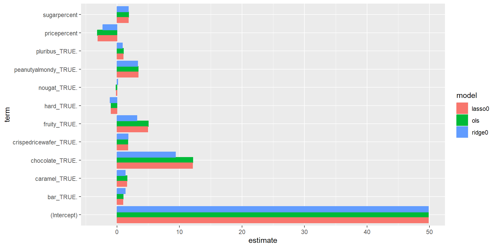
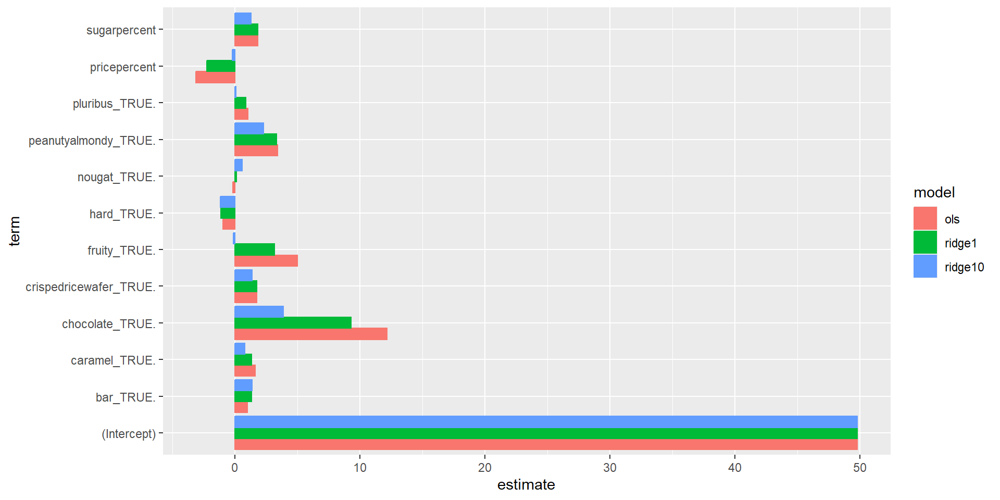
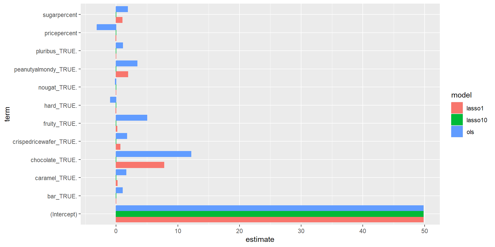
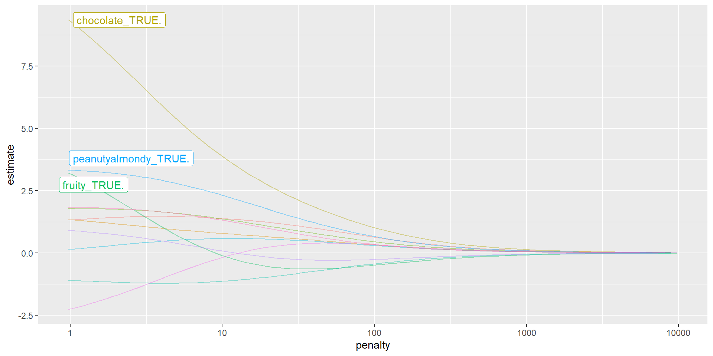
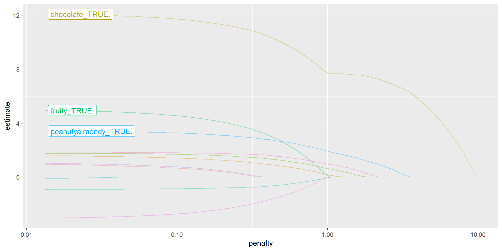

library(tidyverse)
library(tidymodels)
library(knitr)
library(fivethirtyeight) # for candy rankings data
tidymodels_prefer()
set.seed(427)MATH 427: Regularization & Model Tuning
Computational Set-Up
Data: Candy
The data for this lecture comes from the article FiveThirtyEight The Ultimate Halloween Candy Power Ranking by Walt Hickey. To collect data, Hickey and collaborators at FiveThirtyEight set up an experiment people could vote on a series of randomly generated candy match-ups (e.g. Reese’s vs. Skittles). Click here to check out some of the match ups.
The data set contains 12 characteristics and win percentage from 85 candies in the experiment.
Data: Candy
glimpse(candy_rankings)Rows: 85
Columns: 13
$ competitorname <chr> "100 Grand", "3 Musketeers", "One dime", "One quarter…
$ chocolate <lgl> TRUE, TRUE, FALSE, FALSE, FALSE, TRUE, TRUE, FALSE, F…
$ fruity <lgl> FALSE, FALSE, FALSE, FALSE, TRUE, FALSE, FALSE, FALSE…
$ caramel <lgl> TRUE, FALSE, FALSE, FALSE, FALSE, FALSE, TRUE, FALSE,…
$ peanutyalmondy <lgl> FALSE, FALSE, FALSE, FALSE, FALSE, TRUE, TRUE, TRUE, …
$ nougat <lgl> FALSE, TRUE, FALSE, FALSE, FALSE, FALSE, TRUE, FALSE,…
$ crispedricewafer <lgl> TRUE, FALSE, FALSE, FALSE, FALSE, FALSE, FALSE, FALSE…
$ hard <lgl> FALSE, FALSE, FALSE, FALSE, FALSE, FALSE, FALSE, FALS…
$ bar <lgl> TRUE, TRUE, FALSE, FALSE, FALSE, TRUE, TRUE, FALSE, F…
$ pluribus <lgl> FALSE, FALSE, FALSE, FALSE, FALSE, FALSE, FALSE, TRUE…
$ sugarpercent <dbl> 0.732, 0.604, 0.011, 0.011, 0.906, 0.465, 0.604, 0.31…
$ pricepercent <dbl> 0.860, 0.511, 0.116, 0.511, 0.511, 0.767, 0.767, 0.51…
$ winpercent <dbl> 66.97173, 67.60294, 32.26109, 46.11650, 52.34146, 50.…Data Cleaning
candy_rankings_clean <- candy_rankings |>
select(-competitorname) |>
mutate(sugarpercent = sugarpercent*100, # convert proportions into percentages
pricepercent = pricepercent*100, # convert proportions into percentages
across(where(is.logical), ~ factor(.x, levels = c("FALSE", "TRUE")))) # convert logicals into factorsData Cleaning
glimpse(candy_rankings_clean)Rows: 85
Columns: 12
$ chocolate <fct> TRUE, TRUE, FALSE, FALSE, FALSE, TRUE, TRUE, FALSE, F…
$ fruity <fct> FALSE, FALSE, FALSE, FALSE, TRUE, FALSE, FALSE, FALSE…
$ caramel <fct> TRUE, FALSE, FALSE, FALSE, FALSE, FALSE, TRUE, FALSE,…
$ peanutyalmondy <fct> FALSE, FALSE, FALSE, FALSE, FALSE, TRUE, TRUE, TRUE, …
$ nougat <fct> FALSE, TRUE, FALSE, FALSE, FALSE, FALSE, TRUE, FALSE,…
$ crispedricewafer <fct> TRUE, FALSE, FALSE, FALSE, FALSE, FALSE, FALSE, FALSE…
$ hard <fct> FALSE, FALSE, FALSE, FALSE, FALSE, FALSE, FALSE, FALS…
$ bar <fct> TRUE, TRUE, FALSE, FALSE, FALSE, TRUE, TRUE, FALSE, F…
$ pluribus <fct> FALSE, FALSE, FALSE, FALSE, FALSE, FALSE, FALSE, TRUE…
$ sugarpercent <dbl> 73.2, 60.4, 1.1, 1.1, 90.6, 46.5, 60.4, 31.3, 90.6, 6…
$ pricepercent <dbl> 86.0, 51.1, 11.6, 51.1, 51.1, 76.7, 76.7, 51.1, 32.5,…
$ winpercent <dbl> 66.97173, 67.60294, 32.26109, 46.11650, 52.34146, 50.…Data Splitting
candy_split <- initial_split(candy_rankings_clean, strata = winpercent)
candy_train <- training(candy_split)
candy_test <- testing(candy_split)Lasso & Ridge Regression
Question
- What criteria do we use to fit a linear regression model? Write down an expression with \(\hat{\beta_i}\)’s, \(x_{ij}\)’s, and \(y_j\)’s in it.
OLS
- Ordinary Least Squares Regression:
\[ \begin{aligned} \hat{\beta} =\underset{\hat{\beta}_0,\ldots, \hat{\beta}_p}{\operatorname{argmin}}SSE(\hat{\beta}) &= \underset{\hat{\beta}_0,\ldots, \hat{\beta}_p}{\operatorname{argmin}}\sum_{j=1}^n(y_j-\hat{y}_j)^2\\ &=\underset{\hat{\beta}_0,\ldots, \hat{\beta}_p}{\operatorname{argmin}}\sum_{j=1}^n(y_j-\hat{\beta}_0-\hat{\beta}_1x_{1j} - \cdots - \hat{\beta}_px_{pj})^2 \end{aligned} \]
- \(\hat{\beta} = (\hat{\beta}_0,\ldots, \hat{\beta}_p)\) is the vector of all my coefficients
- \(\operatorname{argmin}\) is a function (operator) that returns the arguments that minimize the quantity it’s being applied to
Ridge Regression
\[ \begin{aligned} \hat{\beta} &=\underset{\hat{\beta}_0,\ldots, \hat{\beta}_p}{\operatorname{argmin}} \left(SSE(\hat{\beta}) + \lambda\|\hat{\beta}\|_2^2\right) \\ &= \underset{\hat{\beta}_0,\ldots, \hat{\beta}_p}{\operatorname{argmin}}\left(\sum_{j=1}^n(y_j-\hat{y}_j)^2 + \lambda\sum_{i=1}^p \hat{\beta}_i^2\right)\\ &=\underset{\hat{\beta}_0,\ldots, \hat{\beta}_p}{\operatorname{argmin}}\left(\sum_{j=1}^n(y_j-\hat{\beta}_0-\hat{\beta}_1x_{1j} - \cdots - \hat{\beta}_px_{pj})^2 + \lambda\sum_{i=1}^p \hat{\beta}_i^2\right) \end{aligned} \]
- \(\lambda\) is called a “tuning parameter” and is not estimated from the data (more on this later)
- Idea: penalize large coefficients
- If we penalize large coefficients, what’s going to happen to to our estimated coefficients? THEY SHRINK!
- \(\|\cdot\|_2\) is called the \(L_2\)-norm
But… but… but why?!?
- Recall the Bias-Variance Trade-Off
- Our reducible error can partitioned into:
- Bias: how much \(\hat{f}\) misses \(f\) by on average
- Variance: how much \(\hat{f}\) moves around from sample to sample
- Ridge: increase bias a little bit in exchange for large decrease in variance
- As we increase \(\lambda\) do we increase or decrease the penalty for large coefficients?
- As we increase \(\lambda\) do we increase or decrease the flexibility of our model?
LASSO
\[ \begin{aligned} \hat{\beta} &=\underset{\hat{\beta}_0,\ldots, \hat{\beta}_p}{\operatorname{argmin}} \left(SSE(\hat{\beta}) + \lambda\|\hat{\beta}\|_1\right) \\ &= \underset{\hat{\beta}_0,\ldots, \hat{\beta}_p}{\operatorname{argmin}}\left(\sum_{j=1}^n(y_j-\hat{y}_j)^2 + \lambda\sum_{i=1}^p |\hat{\beta}_i|\right)\\ &=\underset{\hat{\beta}_0,\ldots, \hat{\beta}_p}{\operatorname{argmin}}\left(\sum_{j=1}^n(y_j-\hat{\beta}_0-\hat{\beta}_1x_{1j} - \cdots - \hat{\beta}_px_{pj})^2 + \lambda\sum_{i=1}^p |\hat{\beta}_i|\right) \end{aligned} \]
- LASSO: Least Absolute Shrinkage and Selection Operator
- \(\lambda\) is called a “tuning parameter” and is not estimated from the data (more on this later)
- Idea: penalize large coefficients
- If we penalize large coefficients, what’s going to happen to to our estimated coefficients THEY SHRINK!
- \(\|\cdot\|_1\) is called the \(L_1\)-norm
Question
- What should happen to our coefficients as we increase \(\lambda\)?
Ridge vs. LASSO
- Ridge has a closed-form solution… how might we calculate it?
- Ridge has some nice linear algebra properties that makes it EXTREMELY FAST to fit
- LASSO has no closed-form solution… why?
- LASSO coefficients estimated numerically… how?
- Gradient descent works (kind of) but something called coordinate descent is typically better
- MOST IMPORTANT PROPERTY OF LASSO: it induces sparsity while Ridge does not
Sparsity in Applied Math
- sparse typically means “most things are zero”
- Example: sparse matrices are matrices where most entries are zero
- for large matrices this can provide HUGE performance gains
- LASSO induces sparsity by setting most of the parameter estimates to zero
- this means it fits the model and does feature selection SIMULTANEOUSLY
- Let’s do some board work to see why this is…
LASSO and Ridge in R
ols <- linear_reg() |>
set_engine("lm")
ridge_0 <- linear_reg(mixture = 0, penalty = 0) |> # penalty set's our lambda
set_engine("glmnet")
ridge_1 <- linear_reg(mixture = 0, penalty = 1) |> # penalty set's our lambda
set_engine("glmnet")
ridge_10 <- linear_reg(mixture = 0, penalty = 10) |> # penalty set's our lambda
set_engine("glmnet")
lasso_0 <- linear_reg(mixture = 1, penalty = 0) |> # penalty set's our lambda
set_engine("glmnet")
lasso_1 <- linear_reg(mixture = 1, penalty = 1) |> # penalty set's our lambda
set_engine("glmnet")
lasso_10 <- linear_reg(mixture = 1, penalty = 10) |> # penalty set's our lambda
set_engine("glmnet")Create Recipe
lm_preproc <- recipe(winpercent ~ . , data = candy_train) |>
step_dummy(all_nominal_predictors()) |>
step_normalize(all_numeric_predictors())Question
- Why do we need to normalize our data?
Create workflows
generic_wf <- workflow() |> add_recipe(lm_preproc)
ols_wf <- generic_wf |> add_model(ols)
ridge0_wf <- generic_wf |> add_model(ridge_0)
ridge1_wf <- generic_wf |> add_model(ridge_1)
ridge10_wf <- generic_wf |> add_model(ridge_10)
lasso0_wf <- generic_wf |> add_model(lasso_0)
lasso1_wf <- generic_wf |> add_model(lasso_1)
lasso10_wf <- generic_wf |> add_model(lasso_10)Fit Models
ols_fit <- ols_wf |> fit(candy_train)
ridge0_fit <- ridge0_wf |> fit(candy_train)
ridge1_fit <- ridge1_wf |> fit(candy_train)
ridge10_fit <- ridge10_wf |> fit(candy_train)
lasso0_fit <- lasso0_wf |> fit(candy_train)
lasso1_fit <- lasso1_wf |> fit(candy_train)
lasso10_fit <- lasso10_wf |> fit(candy_train)Collect coefficients
all_coefs <- bind_cols(model = "ols", tidy(ols_fit)) |>
bind_rows(bind_cols(model = "ridge0", tidy(ridge0_fit))) |>
bind_rows(bind_cols(model = "ridge1", tidy(ridge1_fit))) |>
bind_rows(bind_cols(model = "ridge10", tidy(ridge10_fit))) |>
bind_rows(bind_cols(model = "lasso0", tidy(lasso0_fit))) |>
bind_rows(bind_cols(model = "lasso1", tidy(lasso1_fit))) |>
bind_rows(bind_cols(model = "lasso10", tidy(lasso10_fit)))Question
- What should we expect from
ols,ridge0, andlasso0? - They should be the same!
Visualize
all_coefs |>
filter(model %in% c("ols", "ridge0", "lasso0")) |>
ggplot(aes(y = term, x = estimate, fill = model, color = model)) +
geom_bar(position = "dodge", stat = "identity")
Uh-Oh!
- They’re not the same
- Any idea why?
- Algorithm used to fit model
lmestimates coefficients analyticallyglmnetestimates coefficients numerically using an algorithm named “coordinate-descent”
- Moral: you must understand theory AND application
Visualizing Coefficients: Ridge
all_coefs |>
filter(model %in% c("ols", "ridge1", "ridge10")) |>
ggplot(aes(y = term, x = estimate, fill = model, color = model)) +
geom_bar(position = "dodge", stat = "identity")
Visualizing Coefficients: LASSO
all_coefs |>
filter(model %in% c("ols", "lasso1", "lasso10")) |>
ggplot(aes(y = term, x = estimate, fill = model, color = model)) +
geom_bar(position = "dodge", stat = "identity")
Ridge Coefficients vs. Penalty ( \(\lambda\) )
ridge0_fit |> extract_fit_engine() |> autoplot()
LASSO Coefficients vs. Penalty ( \(\lambda\) )
lasso0_fit |> extract_fit_engine() |> autoplot()
Why should I learn math for data science?
- Today:
- Ordinary Least Squares: Linear algebra, Calc 3
- LASSO: Calc 3, Geometry, Numerical Analysis
- Ridge: Linear Algebra, Calc 3
- Bias-Variance Trade-Off: Probability
Question
- How do you think we should choose \(\lambda\)?